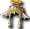

內容
官方公告
【實施期間】
2012年5月30日（三）維修後～2012年6月13日（三）維修前
【活動進行步驟】
1.) 活動NPC「莫伊斯特」會出現在特定城鎮。
2.) 與「莫伊斯特」對話並支付「20萬Glod」，即可移動到活動地圖。
3.) 與活動地圖內的NPC「蕾妮」(28,32)對話，她會說明活動內容。
4.) 擊倒活動地圖出現的怪物，取得活動道具。
5.) 收集必要數量的活動道具，請NPC「蕾妮」(28,32)製作「晴天娃娃」，
就能取得「雨箱」。
※從「雨箱」可以取得各式各樣的道具。
【有活動NPC「莫伊斯特」的城鎮】
・米魯里斯廣場(77,59)
・盧亞斯鎮(74,91)
・斯歐米鎮(96,67)
・艾德安德(98,85)
・魯克西翁鎮(89,85)
【活動地圖出現的怪物】
・紅魔導士
・藍魔導士
・綠魔導士
・黃魔導士
・黑魔導士
・灰魔導士
【可從雨箱取得的道具】
・莫伊斯特之石(有效期限3天)
・蕾妮之石(有效期限3天)
 ・仿造天使
・仿造天使

・仿冒天使 ・仿造惡魔
・仿造惡魔
 ・仿冒惡魔
・仿冒惡魔
・[2日]米斯特拉爾武器兌換券
・天使魔法棒
 ・仿造兔耳髮箍
・仿造兔耳髮箍
・BP滿值藥水
 ・氣力回復藥水
・氣力回復藥水
等
【注意事項】
・進入活動地圖後經過30分鐘，會被傳送到各職業城鎮。
・活動地圖一天可以進入無數次。
・在活動地圖登出後再次登入，會移動到各職業城鎮。
・可透過NPC「蕾妮」(28,32)從活動地圖回到各職業城鎮。
・「晴天娃娃」製作失敗的話，就無法取得「雨箱」。
流程
１．從活動地圖的怪物掉落以下道具
・漂亮的紙*2
・橡皮筋*1
・長繩*1
※掉落率 漂亮的紙 << 橡皮筋 ＝ 長繩
２．把道具交給活動地圖內的NPC「蕾妮」(28,32)
３．成功與否
成功→取得雨箱 雙擊開啟
失敗→消耗材料
活動怪物
紅魔導士
| 紅魔導士 | Lv | AC | MC | AAR | SAR | 掉落物品 |
| HP:- | - | - | - | - | - |  漂亮的紙、橡皮筋、長繩 漂亮的紙、橡皮筋、長繩 |
| 經驗值 | 名聲值 | 金錢 | 攻擊屬性 | 防禦屬性 | ||
| 0 | 0 | 0 | - | - | ||
| STR | DEX | INT | WIS | CON | ||
| - | - | - | - | - |
備註:
藍魔導士
| 藍魔導士 | Lv | AC | MC | AAR | SAR | 掉落物品 |
| HP:- | - | - | - | - | - | 漂亮的紙、橡皮筋、長繩 |
| 經驗值 | 名聲值 | 金錢 | 攻擊屬性 | 防禦屬性 | ||
| 0 | 0 | 0 | - | - | ||
| STR | DEX | INT | WIS | CON | ||
| - | - | - | - | - |
備註:
綠魔導士
| 綠魔導士 | Lv | AC | MC | AAR | SAR | 掉落物品 |
| HP:- | - | - | - | - | - | 漂亮的紙、橡皮筋、長繩 |
| 經驗值 | 名聲值 | 金錢 | 攻擊屬性 | 防禦屬性 | ||
| 0 | 0 | 0 | - | - | ||
| STR | DEX | INT | WIS | CON | ||
| - | - | - | - | - |
備註:
黃魔導士
| 黃魔導士 | Lv | AC | MC | AAR | SAR | 掉落物品 |
| HP:- | - | - | - | - | - | 漂亮的紙、橡皮筋、長繩 |
| 經驗值 | 名聲值 | 金錢 | 攻擊屬性 | 防禦屬性 | ||
| 0 | 0 | 0 | - | - | ||
| STR | DEX | INT | WIS | CON | ||
| - | - | - | - | - |
備註:
黑魔導士
| 黑魔導士 | Lv | AC | MC | AAR | SAR | 掉落物品 |
| HP:- | - | - | - | - | - | 漂亮的紙、橡皮筋、長繩 |
| 經驗值 | 名聲值 | 金錢 | 攻擊屬性 | 防禦屬性 | ||
| 0 | 0 | 0 | - | - | ||
| STR | DEX | INT | WIS | CON | ||
| - | - | - | - | - |
備註:
灰魔導士
| 灰魔導士 | Lv | AC | MC | AAR | SAR | 掉落物品 |
| HP:- | - | - | - | - | - | 漂亮的紙、橡皮筋、長繩 |
| 經驗值 | 名聲值 | 金錢 | 攻擊屬性 | 防禦屬性 | ||
| 0 | 0 | 0 | - | - | ||
| STR | DEX | INT | WIS | CON | ||
| - | - | - | - | - |
備註:
相關道具
| 名稱 | 價格 | 限制 | 職業 | Wei | 取得方式 |
| 雨天之箱 | 10 | Lv0 | 戰修盜騎聖魔預吟 | 0 | 限時活動蕾妮 |
| 能力 | 從少女那裡得到的禮物。裡面裝了什麼，打開之後才知道。 | ||||
| 名稱 | 價格 | 限制 | 職業 | Wei | 取得方式 |
| 漂亮的紙 | 10 | Lv0 | 戰修盜騎聖魔預吟 | 0 | 限時活動紅魔導士、藍魔導士、綠魔導士、黃魔導士、黑魔導士、灰魔導士 |
| 能力 | 製作晴天娃娃的材料。 | ||||
| 名稱 | 價格 | 限制 | 職業 | Wei | 取得方式 |
| 橡皮筋 | 10 | Lv0 | 戰修盜騎聖魔預吟 | 0 | 限時活動紅魔導士、藍魔導士、綠魔導士、黃魔導士、黑魔導士、灰魔導士 |
| 能力 | 製作晴天娃娃的材料。 | ||||
| 名稱 | 價格 | 限制 | 職業 | Wei | 取得方式 |
| 長繩 | 10 | Lv0 | 戰修盜騎聖魔預吟 | 0 | 限時活動紅魔導士、藍魔導士、綠魔導士、黃魔導士、黑魔導士、灰魔導士 |
| 能力 | 製作晴天娃娃的材料。 | ||||
雨箱內容物
| 標記 | 使用限制 | 效果 | 重量 | 期限 |
 仿冒兔耳髮箍（頭部外觀） 仿冒兔耳髮箍（頭部外觀） | Lv21（男）（女） | AC+1 MC+1 HP50 MP50 SP50 | 0 | 1週 |
 翡翠之冠 翡翠之冠 | 男 | AC-6 MC-5 HP200 MP100 SP100 STR2 CON2 INT2 WIS2 DEX2 睡眠防禦 翡翠效果（組合效果 1小時）※翡翠效果會因穿脫而重置效果時間，所以可以無限次使用 | 7 | 1週 |
 翡翠后冠 翡翠后冠 | 女 | 與翡翠之冠相同 | 7 | 1週 |
 天使魔法棒 天使魔法棒 | Lv91 | 雙擊使用後，可以對Lv90以下的玩家施加祝福 | 1 | 1週 |
 蕾妮之石 蕾妮之石 | Lv1 | 蕾妮持有的石頭 裝備時會散發特殊光環 | 0 | 3天 |
| 莫伊斯特之石 | Lv1 | 莫伊斯特持有的石頭 裝備時會散發特殊光環 | 0 | 3天 |
其他道具
 ・速度藥水(光速)、
・速度藥水(光速)、 氣力回復藥水、
氣力回復藥水、 完全藥水、
完全藥水、 BP滿值藥水
BP滿值藥水
 ・混合藥水
・混合藥水
・可裝備 火燄之戒、 大地之戒、
大地之戒、 賽克之戒、
賽克之戒、 黑林之戒、
黑林之戒、 疾風之戒
疾風之戒
・可裝備 燎炎之戒、 連斯之戒、
連斯之戒、 佩特之戒、
佩特之戒、 春雨之戒、
春雨之戒、 布利茲之戒
布利茲之戒
・可裝備 戰士耳環、 巫師耳環
巫師耳環
・仿造天使、仿造惡魔、 仿冒天使、仿冒惡魔
仿冒天使、仿冒惡魔
・對話框變更[14天]
・[1日]傭兵副隊長召喚捲軸
・吟遊詩人之心、 騎士之心
騎士之心
留言
- 因為不知道活動道具該放在哪一頁，所以放進了活動頁面。如果有更適合的地方，請幫忙移動 -- 賽托亞魔法師? 2012-05-31 (四) 20:26:10
- ↑我個人覺得，任務用道具(紙、橡皮筋、繩子)只放在各活動頁面就好，翡翠之冠這類活動獎勵道具則記載在各自的頁面應該沒問題吧。（例如守護動物的極光之器(限定品)雖然是活動限定道具，守護武器欄也有記載） -- h? 2012-06-01 (五) 03:22:31
- 蕾妮之石、莫伊斯特之石算外觀道具。沒有特別的增益效果，只有特效。而且還不能擺攤賣……這到底有什麼意義啊!? -- 魔? 2012-06-01 (五) 20:46:57
- 天使魔法棒只能使用1次。會提升自己周圍90級以下角色的副能力。持續時間大約40分鐘多一點，效果範圍等不明 -- 魔? 2012-06-01 (五) 20:51:20